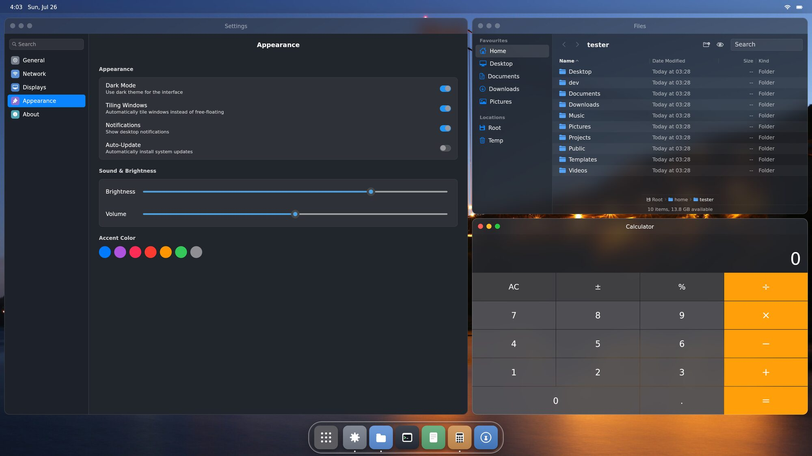
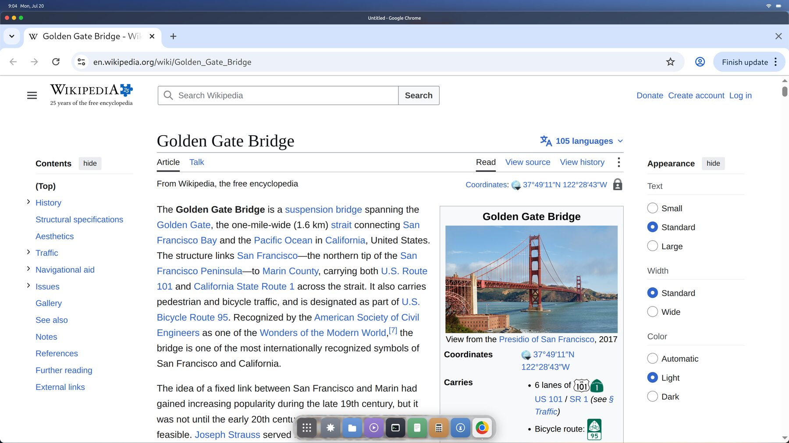
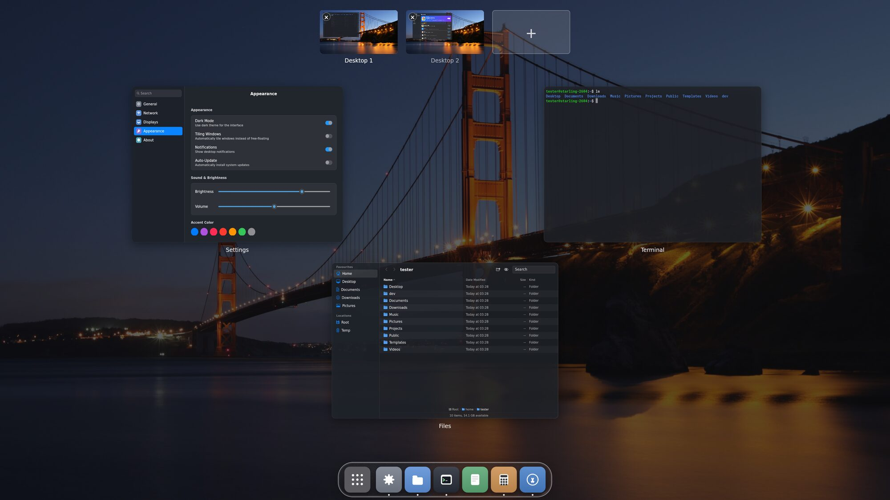
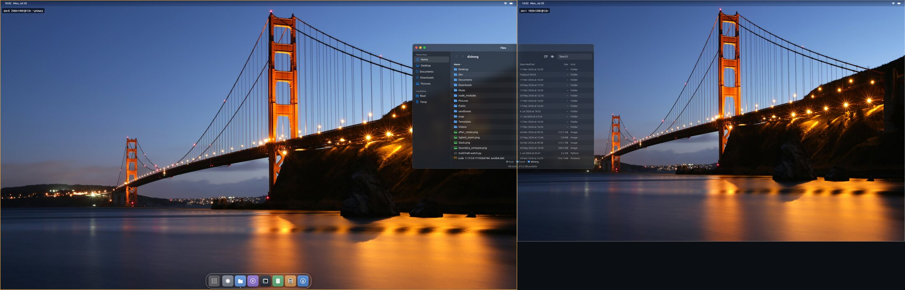

A whole desktop,
built like one app
Most Linux desktops are a dozen separate programs glued together. Starling is a single application — compositor, window manager, dock and apps in one natively rendered program. Which is why the things other desktops bolt on are simply built into this one.

One program, not a pile of parts
A traditional Linux desktop is an assembly. A compositor here, a panel there, a window manager, a toolkit, a theme engine, a settings daemon — separate programs with separate models, passing messages and hoping they agree. It works. But anything that spans two of them becomes someone's extension, someone's patch, someone's fork.
Starling is built the way you'd build a large application. The compositor, the window manager, the dock, the menu bar and the panels are one program sharing one scene and one render pass. There is no gap between the parts, because there are no parts.
That single decision is why the list below reads the way it does. None of it is a plugin.
- Pick Wayland or X11 at the login screen
- Tiling means installing a different desktop
- Blur and transparency via toolkit CSS
- Theming stops at the toolkit boundary
- Panel and compositor negotiate over IPC
- Wayland and X11 both native, at once
- Tiling is a switch in Settings
- Glass is real optics on the GPU
- One theme, everything, instantly
- They're the same program
What falls out of that
These aren't features layered on top. They're what you get when the whole desktop is one application with one view of the world. Every screenshot below is the real thing, captured from a running session.
Tiling and floating, both first-class
Floating windows by default. Flip one switch and everything arranges itself master-and-stack, the way a tiling window manager does — your browser holding the master pane, everything else stacked beside it.
Flip it back and every window returns to exactly where it was floating. No extension, no separate desktop to switch to, nothing to relearn.
Settings → Appearance → Tiling Windows
Your apps, composited natively
The Wayland compositor lives inside Starling, so Chrome, Slack and other Wayland apps become textures in the same scene as the dock — sharing GPU memory, never copied, never streamed.
An X server is built in alongside it, running X11 clients on that same GPU path. Both display servers, one desktop, no session type to pick at login.
Chrome · Slack · Electron · GTK · GPU-accelerated X11
Spaces and Mission Control
Slide between virtual desktops, carry a window along as you go, or pull back with one key and see every space at once. Anything you send fullscreen quietly becomes a space of its own.
Drag a window between spaces from the overview, or add a new one from the strip along the top.
Ctrl + ↑ for the overview · Ctrl + ← → to switch
Monitors that behave
Every display gets its own menu bar, its own wallpaper and its own spaces — but they are one desktop, not two. Park a window across the boundary and it just works: half drawn on one screen, half on the other, at each screen's own scale.
Unplug a monitor and its windows come home instead of vanishing off into nowhere. Plug it back in and the desktop picks up where it left off.
Hot-plug · per-display scale · per-display spaces
Real glass, not a CSS trick
The dock and panels don't fake depth with a blur filter. A shader gives each panel real thickness, derives a surface normal from it, and bends the view ray through that normal with Snell's law — then adds a Fresnel rim and a specular highlight riding the same surface.
Look at the text passing behind the dock: it doesn't just blur, it bends and compresses toward the rounded ends, the way it would through a real piece of glass. A blur filter cannot do that.
Physically-based · GPU fragment shaderRendered natively, end to end
No web view, no HTML, no CSS anywhere in the desktop. Every pixel is drawn by the GPU through a UI framework compiled ahead of time to machine code — with no interpreter or virtual machine in the loop. It animates like a native app because it is one.
Swift, compiled · straight to DRM/KMSAnd it's a complete desktop
Spaces you can slide between, Mission Control, multi-monitor that handles being unplugged, and a set of first-party apps that ship with it.
- Spaces and Mission Control. Slide between virtual desktops, carry a window along as you go, or pull back and see everything at once.
- Monitors that behave. Plug a display in and it arrives with its own dock, menu bar and spaces. Unplug it and your windows come home rather than vanishing.
- Apps included. Files, Terminal, Settings, Calculator, Text Editor, Image Viewer, and an App Store that installs from the Ubuntu archive.
- Crashes stay contained. Every app is its own process sharing GPU buffers with the desktop — zero copies, and one app falling over takes only its own window.

One package, then pick Starling at login
# Ubuntu 25.10 or 26.04, on an amd64 machine sudo apt install ./starling-desktop_0.1-1_amd64.deb # then log out, choose "Starling" from the session menu, and sign in